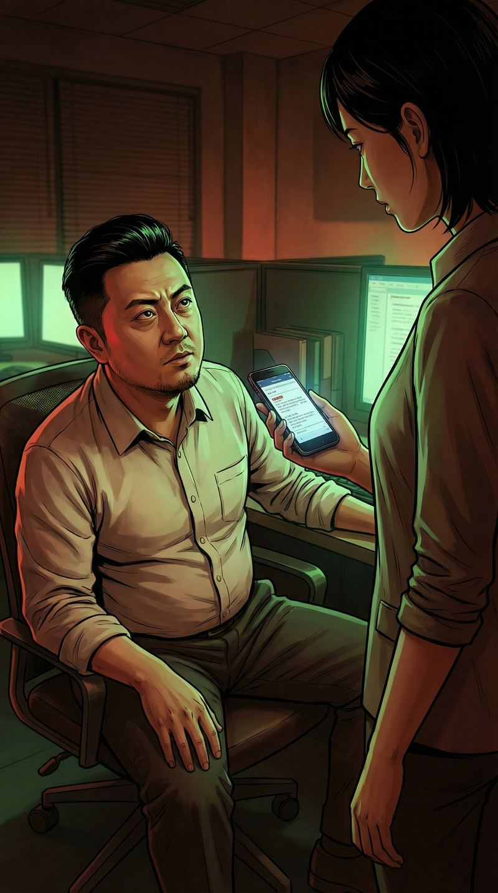
凌晨1点17分。婉清站在我对面，手机屏幕上是她的调查结果。
"你简历上的'星辰科技'，工商登记2019年注销。但你写的入职时间是2020年。"
她查得很彻底。不愧是我亲手招进来的人。
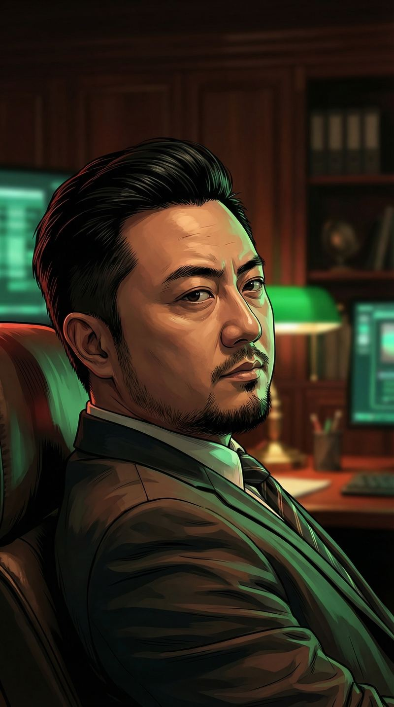
我靠在椅背上，沉默了五秒。
说多少？说什么版本？信任的代价是什么？
"婉清，有些事……我现在不能说。但我可以告诉你一件事——"
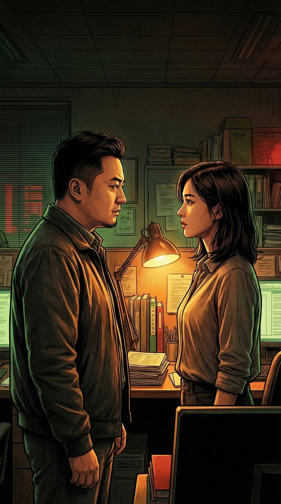
我站起来，看着她的眼睛。
"我这辈子做过的所有事，没有一件是为了害人。等这次路演结束，我全告诉你。"
她盯着我看了很久。然后转身走了。
她没说"好"。也没说"不信"。这是林婉清式的留余地——给你时间，但她不会停止挖掘。
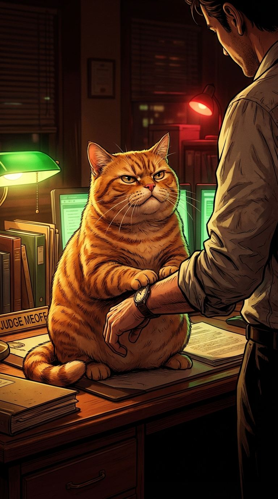
大橘不知道什么时候跳上了桌子，前爪搭在我手腕上，表情严肃得像个主持调解节目的老法官。
你一只猫倒是活得坦荡。吃了睡、睡了吃，简历上的每一项都经得起查。
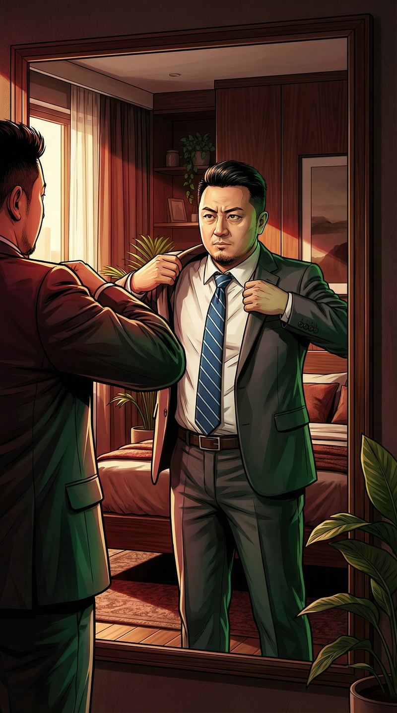
早上7点。我对着镜子系领带。深灰西装，白衬衫。
三年前穿的是防弹衣。现在是西装。都是战袍，只是战场不同。
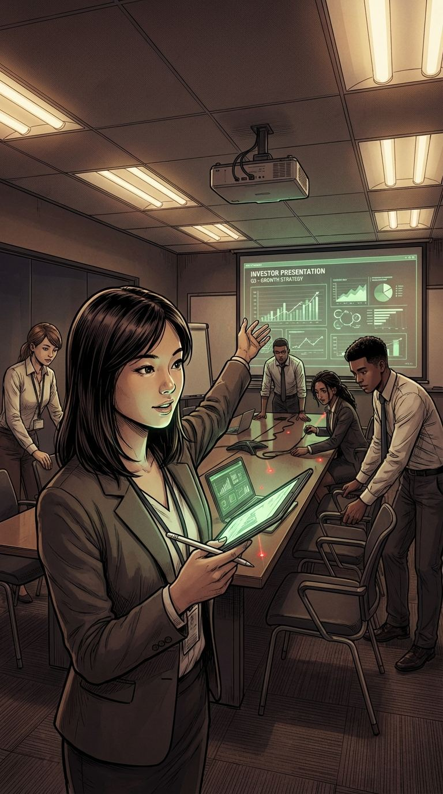
到公司，团队已经在调试设备。会议室能坐四十人，今天会来三十位投资人。
大屏幕上是我做的PPT——47页，每一页都是我们18个月的心血。
"音频测试通过，投影清晰度OK。"婉清举着平板报告，语气专业得像什么都没发生过。
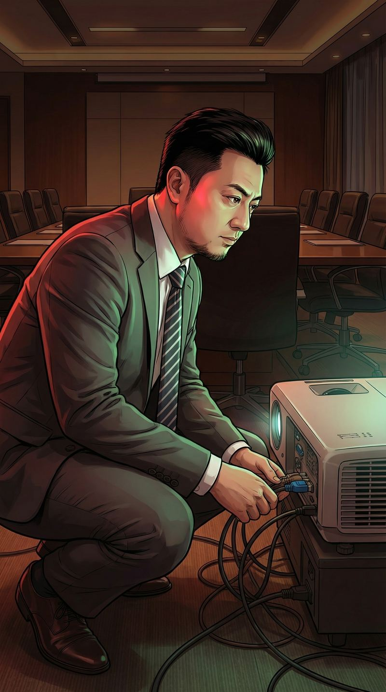
我蹲下来检查投影仪的接线。
职业习惯——任何关键任务前，亲自检查每一个环节。这是部队教我的。靠别人检查的人，坟头草最高。
一切正常。至少现在看起来是。
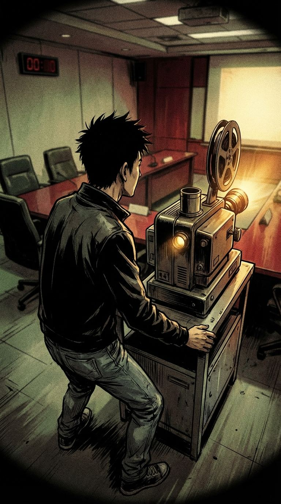
小王在搬椅子，动作勤快。他搬到投影仪旁边的时候，弯腰系了个鞋带。
鞋带系了8秒。正常人系鞋带3秒。多出来的5秒……他的手在投影仪底部摸了一下。
我看到了。但我没动声色。
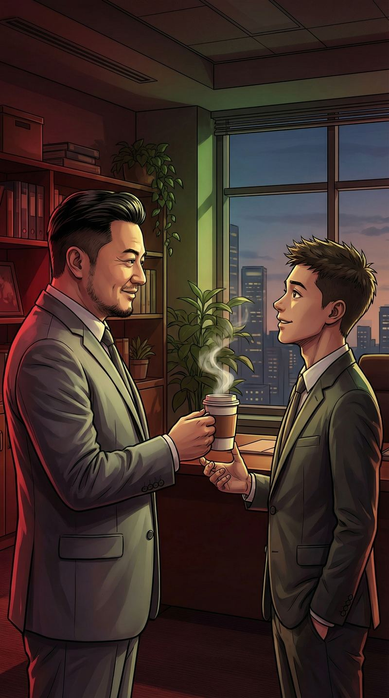
"小王，咖啡给你。今天辛苦了。"
我的笑容温暖得能融化冰箱。
你在投影仪上做了什么手脚？U盘？信号劫持器？还是单纯的HDMI切换？
无所谓。不管你做了什么——我都有预案。
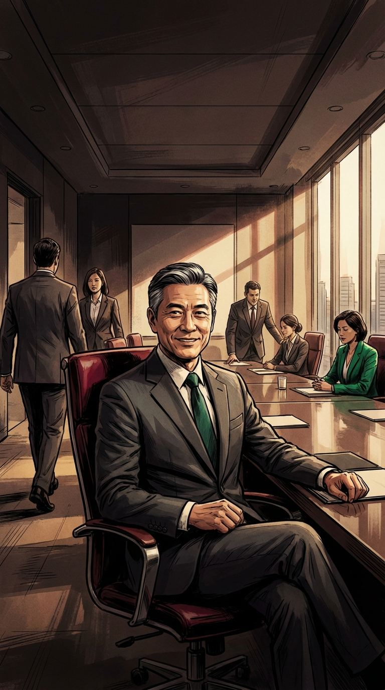
9点30分。投资人陆续入场。
赵鹏飞第三个到。坐在第一排正中。西装笔挺，笑容比我还温暖。
这个人投了我们A轮3000万。同时派人偷我们核心数据。商场没有朋友，只有筹码。
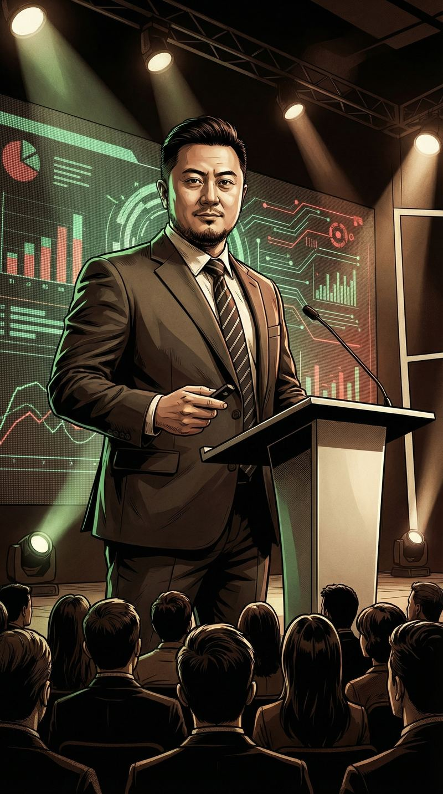
10点整。我站上路演台。
"各位好。我是朱江，幻境科技创始人。今天，我要给大家看一个东西——"
按下翻页器。第一张幻灯片完美呈现。
到目前为止一切正常。小王的手脚应该不会从第一页就触发。他会等到最关键的数据页。
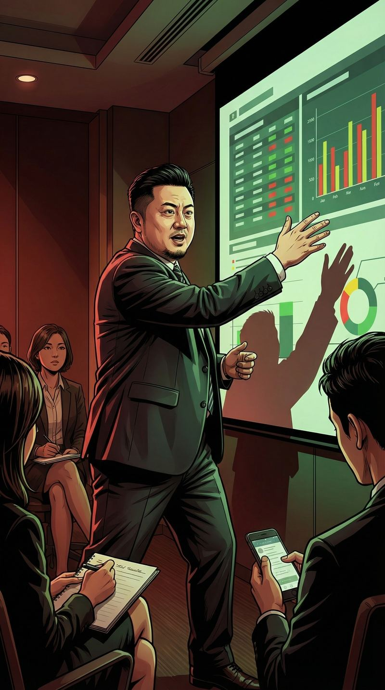
我按照节奏往下讲。市场规模、技术壁垒、团队背景。投资人们表情各异——有人专注，有人在玩手机，赵鹏飞始终微笑。
第23页。核心技术演示。
"下面是我们模型的实时推理演示——"
按下翻页器。
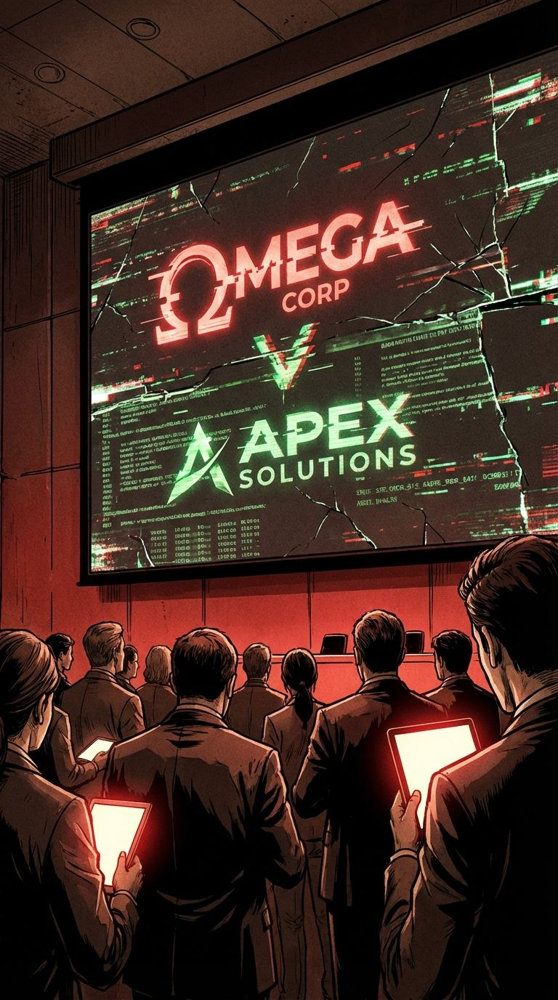
屏幕闪了一下。
出现的不是我的PPT。是一套完全不同的演示方案——
"智瞳AI · 核心技术方案"
智瞳AI。赵鹏飞投的另一家公司。我们的直接竞品。
来了。
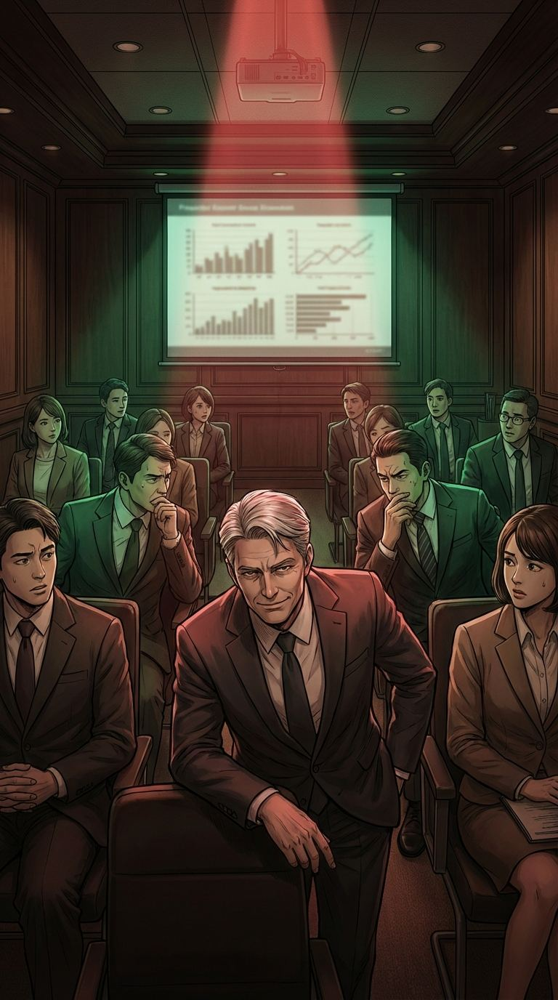
台下开始窃窃私语。
"这是怎么回事？"
"竞品的方案？抄袭？"
赵鹏飞的笑容没变。但我注意到他微微前倾了——这是在看戏的姿势。
他的计划很简单：让投资人以为我们偷了智瞳AI的方案。一箭双雕——毁我信誉，抬竞品估值。
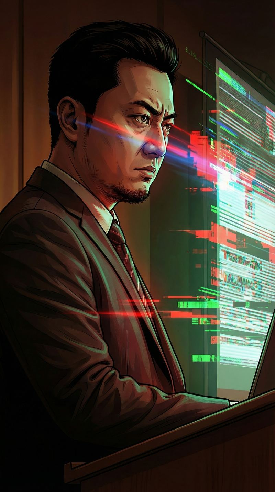
90秒。我有90秒，在场面彻底失控之前做出反应。
A — 拔电源，声称技术故障，改天重来
最安全。但今天三十位投资人的时间不会再给第二次。
B — 当场揭穿赵鹏飞的阴谋
没有证据。我的追踪标记能证明数据流向，但不能证明是赵鹏飞指使小王篡改投影。
C — 将计就计，把竞品方案变成我的路演素材 ✓
疯了吧？——不。这是最好的机会。
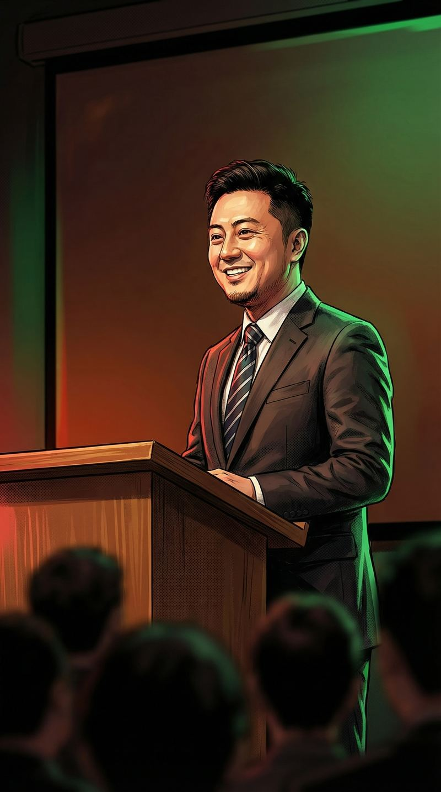
我笑了。
不是尴尬的笑，是真的觉得好笑。台下的窃窃私语因为这个笑容停顿了一秒。
"各位，这一页不是事故。是我故意准备的。"
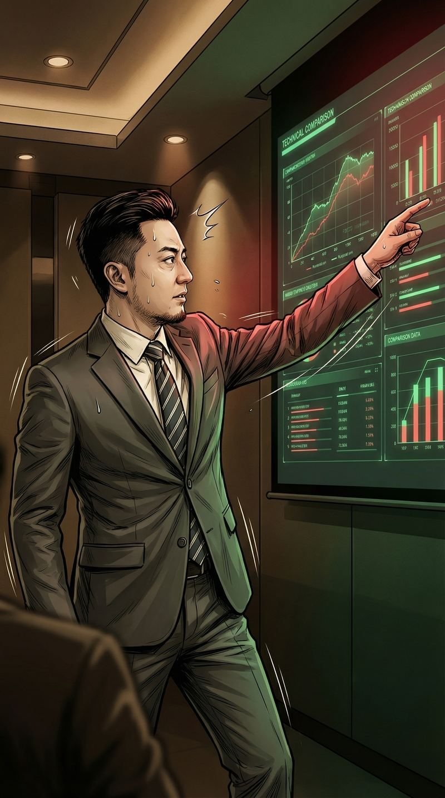
我转身指着大屏幕上的智瞳AI方案。
"这是市面上最好的竞品方案。我花了三个月研究它。现在我要做一件事——"
"用我们的模型，实时拆解它的每一个弱点。"
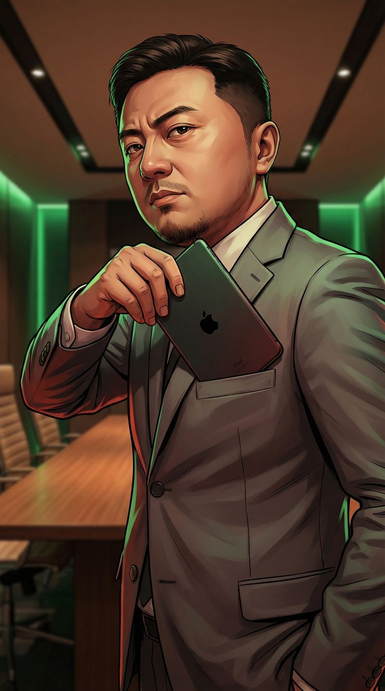
我从口袋掏出平板电脑——昨晚特意带的。上面有我们模型的完整部署环境。
部队教过我一件事：永远有Plan B。而我的Plan B，是随身携带整个武器库。
平板投屏到大屏幕。两套方案并排显示。
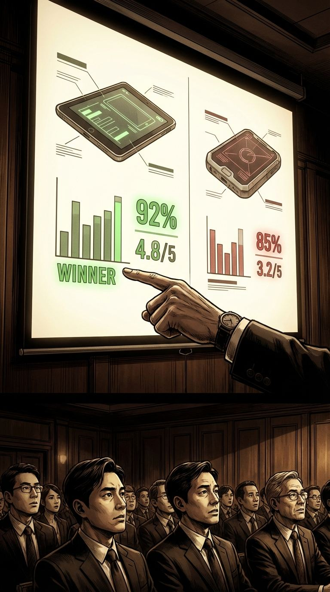
"看这里——智瞳的推理延迟是340毫秒。我们的，47毫秒。"
手指在平板上飞速操作。实时数据一条一条弹出来。
"再看准确率。他们在低光照场景下衰减38%。我们——"
数字跳出来：衰减2.7%。
台下开始有人发出"嚯"的声音。
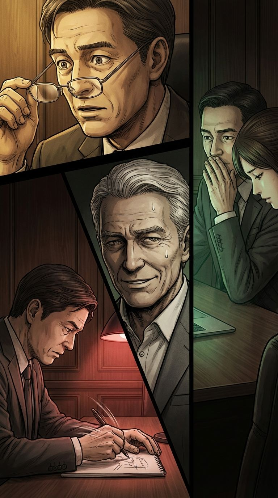
第一排左边那位戴眼镜的投资人放下了手机。中间那位开始记笔记。右边那位已经在跟助理低声说什么。
赵鹏飞的笑容终于有了一丝裂痕。
你给我的子弹，我用来打你自己。谢谢。
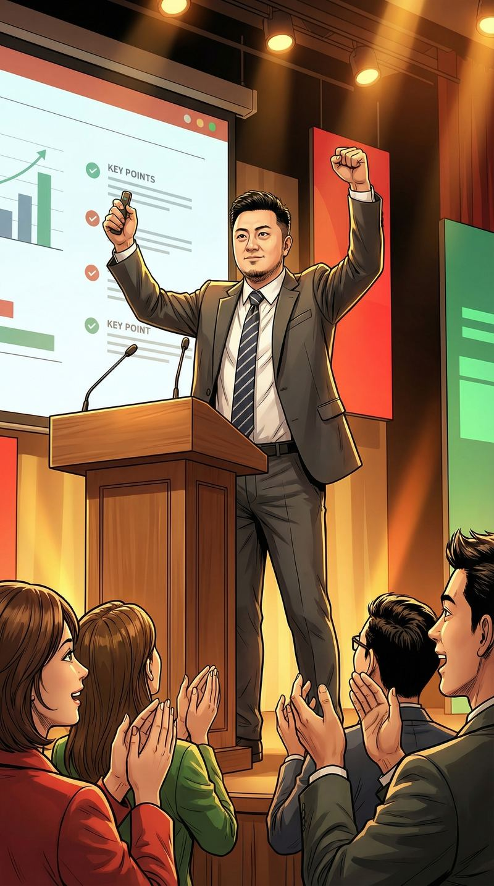
"所以各位——这就是我们的护城河。不是PPT上的数字。是放在任何竞品旁边，都碾压的硬实力。"
我关掉竞品方案的页面，切回自己的PPT第24页。
"好，让我们继续。"
全场安静了两秒。然后——掌声。
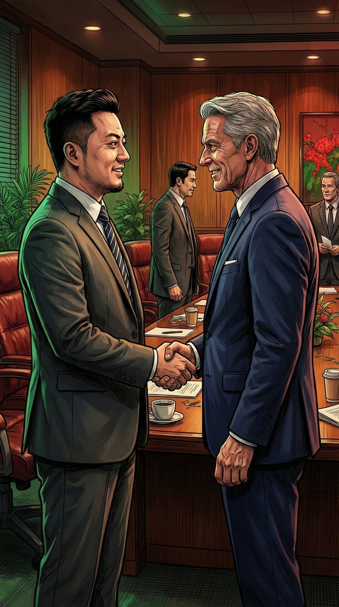
路演结束。三位投资人当场递了名片。两位说"下周约详谈"。
赵鹏飞也走过来。
"精彩！朱总，不愧是我看好的团队。"
握手。他的力度比上次大了20%。
你的手在发力，但你的笑容在发抖。你没想到我有平板这个后手。
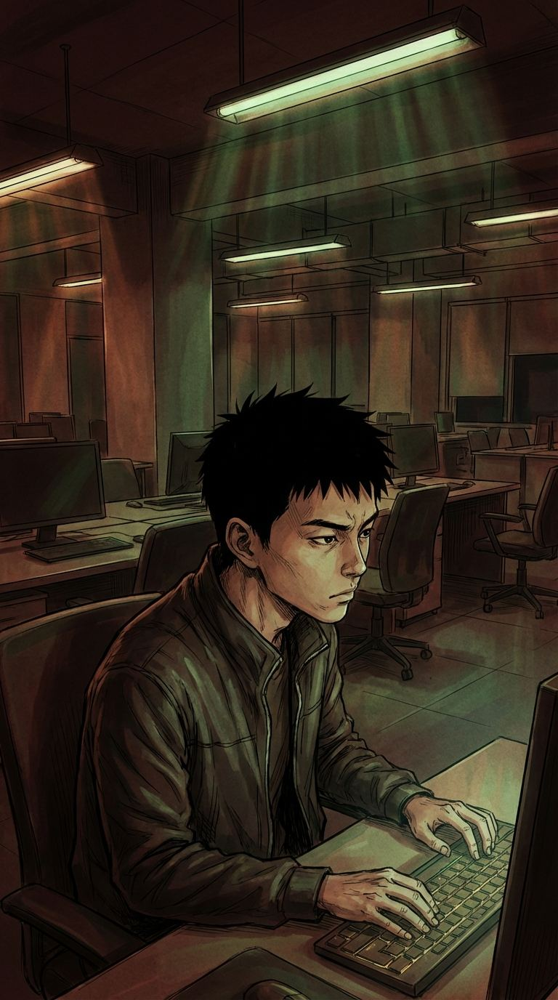
散场后，我路过小王的工位。他低着头，键盘敲得特别用力。
他在紧张。计划失败了，他的"雇主"不会满意。
一个被逼着做间谍的25岁年轻人，任务失败后会怎样？
我第一次对他产生了一丝……不是愤怒，是担心。
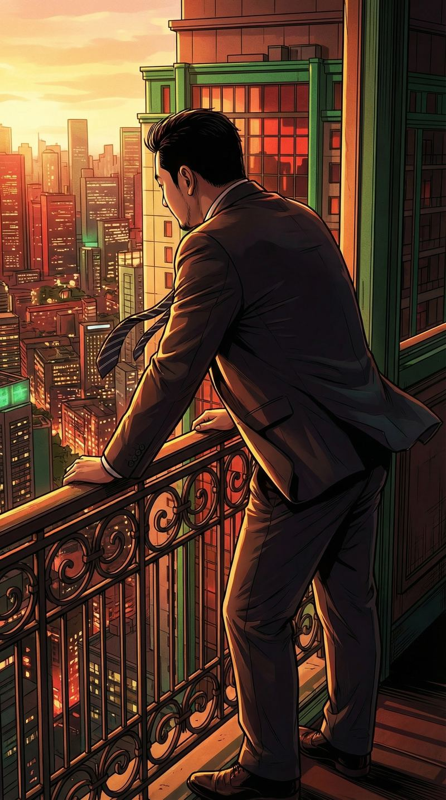
我站在办公室阳台上，看着楼下的车流。关于小王，我要做一个选择。
A — 继续利用他，喂更多假情报
理性最优。但他只是个棋子，棋子用完了会被丢掉。
B — 找他摊牌，给他一个机会 ✓
风险最大。但如果他愿意反水，我就多一张牌。而且……25岁，人生还长。
C — 直接报警，让法律解决
最正确。但报警意味着商业机密案公开，融资黄了。
菩萨心肠，霹雳手段。先菩萨一次。
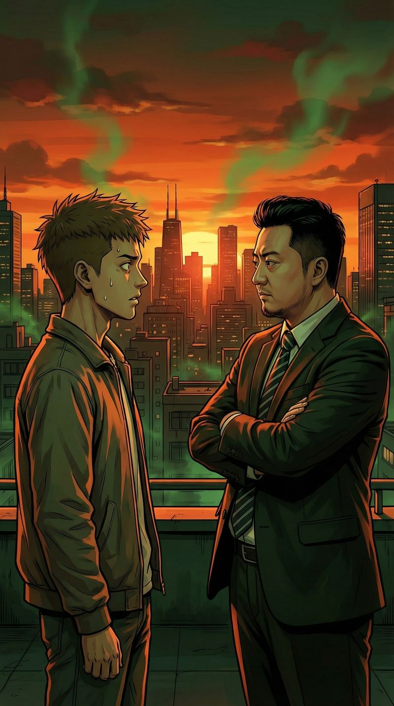
傍晚6点。我约小王到天台。
夕阳把整座城市染成橙色。风很大。他站在我对面，手插在口袋里，指关节发白。
"小王——或者我该叫你别的名字？"
他的瞳孔缩了一下。
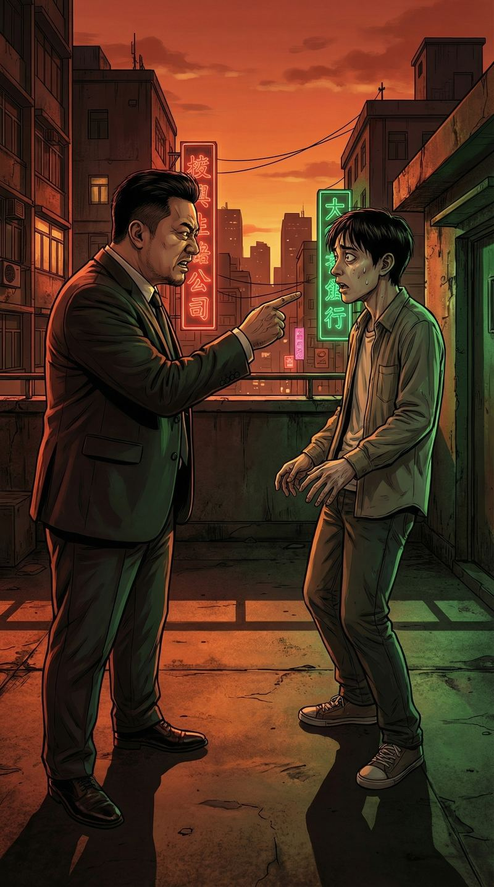
"你拷走的数据全是假的。追踪标记把你的每一步都告诉了我。你的U盘去了鼎盛大厦32层——赵鹏飞的地盘。"
小王的脸色肉眼可见地变白。
"你……从什么时候知道的？"
"你第一天走进来的时候。你的站姿告诉我的。"
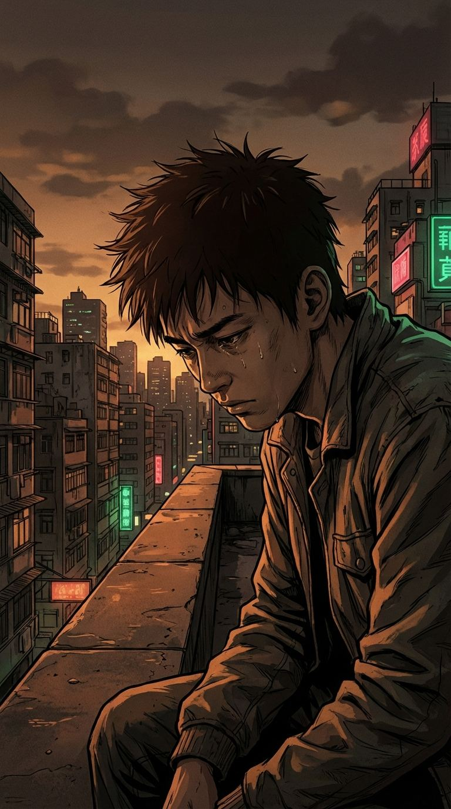
他沉默了很久。然后开口了。
"我欠了赵鹏飞的人60万。网贷利滚利。他们说……帮他们做三个月，债就清了。"
60万。一个刚毕业的年轻人。在这座城市，60万足够毁掉一个人的全部体面。
我想起自己25岁的时候。也被逼到过墙角。不同的是——我有退路，他没有。
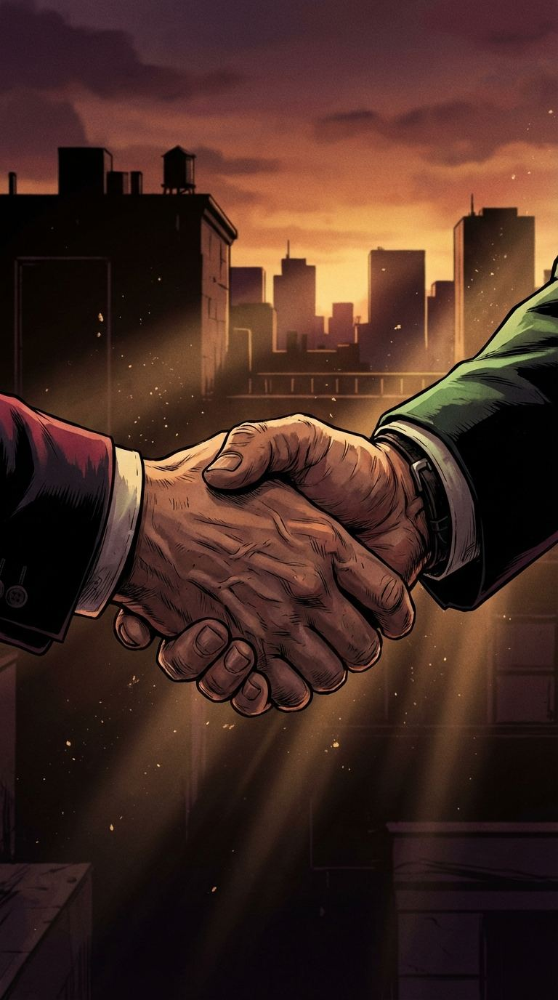
我伸出手。
"两个选择。一，你继续替赵鹏飞办事，但从今天起你给他的所有信息由我控制。你变成双面间谍。事成之后，60万我替你平了。"
"二，你现在走，我不追究。但赵鹏飞的人不会放过你。"
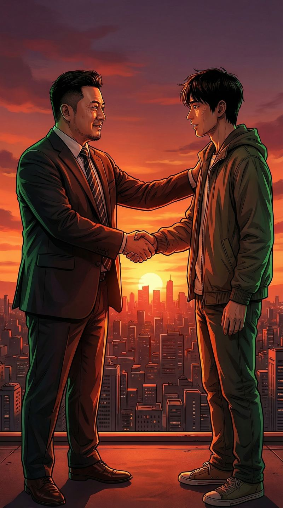
风吹过天台。夕阳已经沉了一半。
小王看了我很久——比婉清昨晚看我的时间还长。
然后他握住了我的手。
"朱哥……谢谢。"
从"朱总"变成了"朱哥"。这个称呼的变化，比任何合同都可靠。
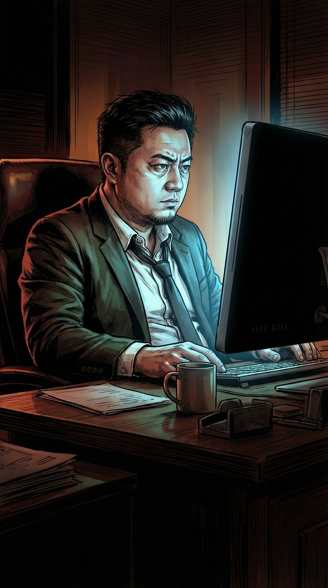
深夜11点。所有人都走了。我独自坐在办公室，打开那封加密邮件。
"幽灵，好久不见。"
我开始追踪邮件的IP来源。层层VPN剥开——
最终指向的位置让我血液凝固。
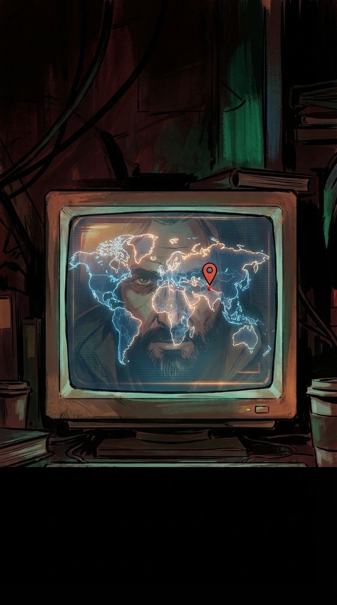
屏幕上的地理坐标，对应的是——
瓦罕走廊。塔吉克斯坦边境。
那是我最后一次执行任务的地方。三年前。代号"冰封"。
"冰封"行动里……有两个人没有回来。
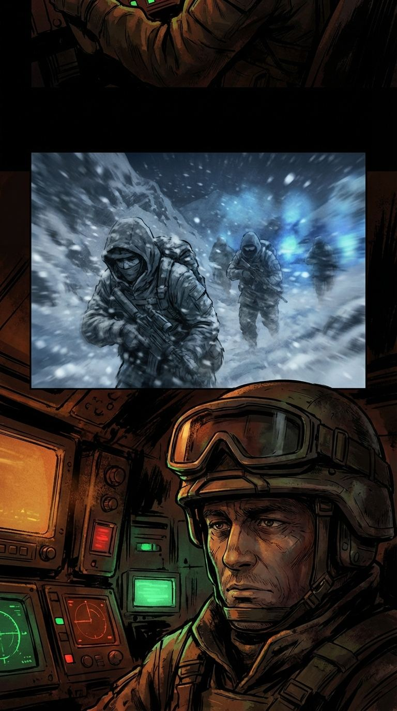
记忆闪回。零下27度的雪地。通讯中断。直升机没来。
刘铮和赵阳。一个是我的搭档，一个是我的学员。
我带回了8个人。但那两个……
档案上写的是"任务中牺牲"。
但如果其中一个没死呢？
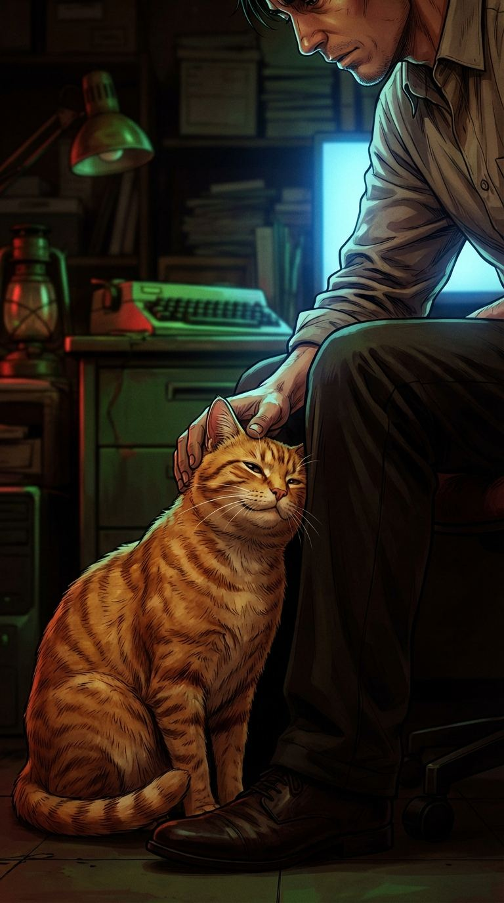
大橘从黑暗中走过来，蹭了蹭我的小腿。
我低头看它。它抬头看我。16斤的橘猫眼里倒映着屏幕的蓝光，表情居然有点心疼。
你是唯一一个知道我深夜会发呆的室友。不过你的解决方案永远只有一个——蹭。
我伸手摸了摸它的头。
还好有你在。
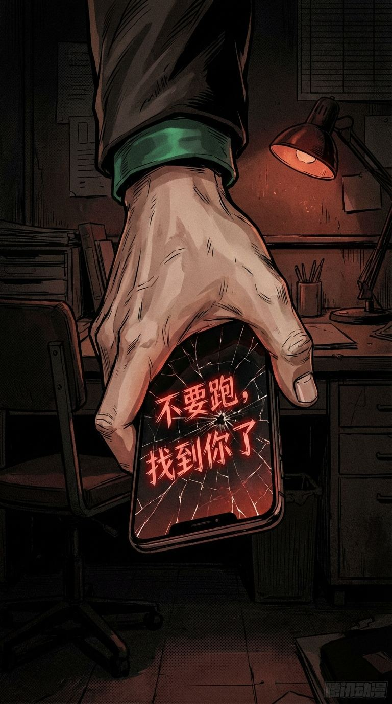
手机震动。一条新消息。
发件人：unknown。
"赵鹏飞不是你最大的敌人。
我才是。
——或者说，我曾经是你的兄弟。"
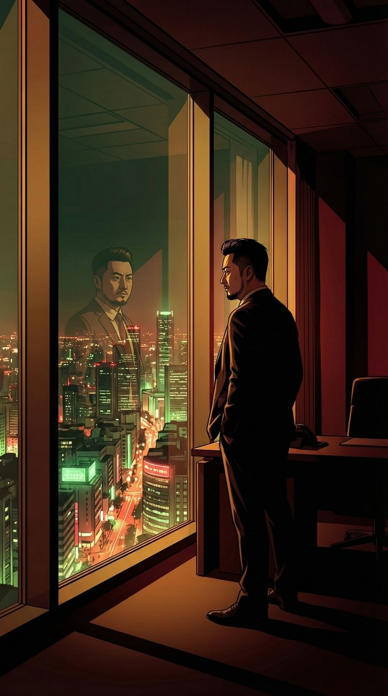
我缓缓站起来。窗外的城市灯火万千，但我眼前只有那片雪地。
刘铮。
你没死。你活着回来了。而现在，你来找我了。
商场上有赵鹏飞，暗处有一个活着的"死人"。婉清在追问我的过去。小王刚变成双面间谍。
这盘棋，比我想的大得多。
路演反杀 · 间谍反水 · 旧日幽灵苏醒
刘铮出现在公司楼下。西装革履，名片上写着——
"智瞳AI · 联合创始人"。
我曾经在雪地里背着他走了六公里。
现在他是我的竞品CEO。
——"幽灵，这次不是你带队了。"